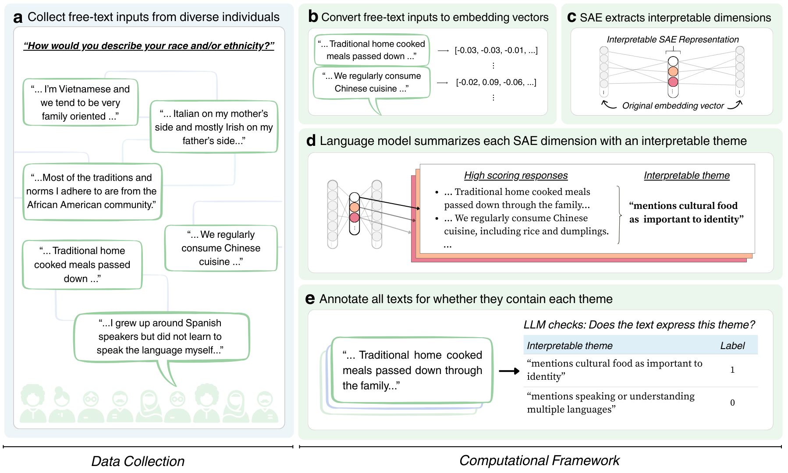
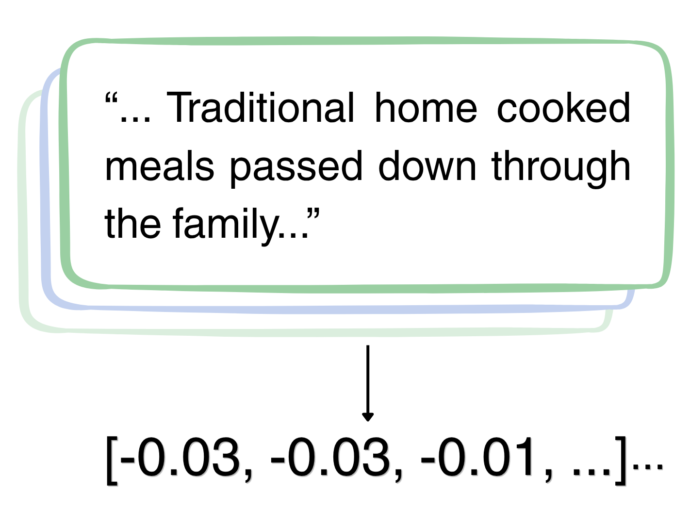

We computationally identify interpretable themes in participants' free-text responses using sparse autoencoder (SAE) models. Models are trained using the HypotheSAEs library (Movva and Peng et al., 2025). These themes are automatically learned from the data (that is, we do not pre-specify them). Each response is then represented by which themes it expresses, converting unstructured free text into structured data that is useable in downstream statistical analysis.

We convert free-text responses into embedding vectors using OpenAI's text-embedding-3-large model. Each vector captures the semantic meaning of the response but is not readily interpretable.

A sparse autoencoder (SAE), trained separately on each identity axis, extracts interpretable dimensions from the embeddings. Each dimension captures a recurring pattern in how identity is expressed — such as references to cultural heritage, language, or childhood experiences.
The SAE learns a set of M=32 features, where at most K=4 are active for any given response. This sparsity encourages each feature to capture a distinct aspect of identity. For details, see Movva and Peng et al. (2025); code is available at hypothesaes.org.

We prompt an LLM with the free-text responses that score highest on each SAE dimension, asking it to identify a common, interpretable theme. This produces labels like "mentions cultural food as important to identity" or "mentions fluidity or fluctuation in gender identity."

Each theme label is used as a prompt for GPT-4.1-mini to annotate every response — not just the top-activating ones. This yields a full binary annotation matrix suitable for downstream statistical analysis.